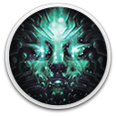

 System Shock
Details
 |
|
| Playtime | 1m 0s |
| Last Activity | 2025-10-02 15:36:22 |
| Added | 2025-03-21 17:36:49 |
| Modified | 2025-10-02 10:18:05 |
| Completion Status | Played |
| Library | Gog |
| Source | GOG |
| Platform | PC (Windows) |
| Release Date | 2023-05-30 |
| Community Score | 76 |
| Critic Score | 80 |
| User Score | |
| Genre | Adventure Role-playing (RPG) Shooter |
| Developer | Nightdive Studios |
| Publisher | Prime Matter |
| Feature | Single Player |
| Links | Official Website Steam GOG Wikipedia Epic Discord Twitch YouTube Subreddit Community Wiki Playstation Xbox |
| Tag | Amazon Luna Atmospheric Cyberpunk First-Person FPS Gore Horror Remake Science Sci-fi Shooter Space Story Rich Survival Survival Horror Violent |
Description

System Shock is the fully fledged remake of the ground breaking original from 1994, combining cult gameplay with all-new HD visuals, updated controls, an overhauled interface and all-new sounds & music; it even has the original voice actor of SHODAN, one of gaming’s most iconic villains. Witness the rebirth of one of the greatest and most influential games ever created.
SHE IS SELF-AWARE AND AWARE OF YOU
Meet SHODAN. The psychotic AI has taken control of Citadel Station and turned the crew into an army of cyborgs and mutants; She now plans to do the same to Earth. You must explore and battle your way through the depths of a space station gone to hell. Stop SHODAN and avert humanity’s destruction.
HER TERMINATION IS OUR SALVATION
FEATURES
- Fight to death in the depths of space- Face off against the forces of a rogue AI gone mad
- Improve your skills and adapt to take on your foes
- Discover a non-linear story unfolding at your own pace
- Jack into cyberspace to hack the system and open other routes
- Innovative art style combines retro future design with modern technology
Become fully immersed: shoot, brawl, crawl, climb, leap and think your way through Citadel Station.